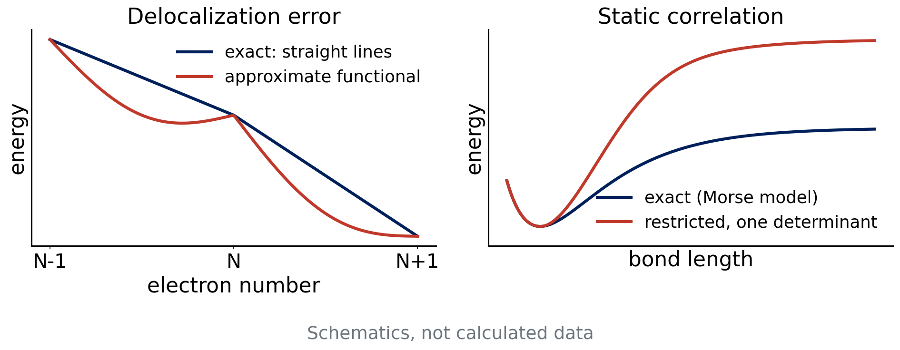

Lecture 9 · Debrief Exp. 4 · Why some reactions are hard for DFT
Self-interaction, static correlation and atomization energies, then Experiment 5
Advanced Physical Chemistry · Florida Institute of Technology
Debrief: Experiment 4
Your results
[Live: open Class results → Experiment 4 heatmap]
- Signed errors for 16 methods on reactions 4a–4d
- Compare the dark cells with Experiment 3
[Insert class plot: -D4 on versus off]
[Insert class plot: Experiment 4 D4 chart: PBE vs. PBE-D4 and B3LYP vs. B3LYP-D4, per reaction]
[Insert class plot: dimer chart]
[Insert class plot: Experiment 4 dimer chart: ethane dimer (4c) and methanol dimer (4d) errors grouped by dispersion treatment: none, -D4, VV10, fitted]
What you probably saw: -D4 on and off
- -D4 matters most where dispersion matters most: the ethane dimer, hexane → neohexane
- It helps less for the Diels–Alder reaction, which is not a dispersion problem
- An uncorrected GGA often underbinds a dispersion-bound dimer
- Adding -D4 usually moves the result in the right direction, but not always to the reference
What you probably saw: dispersion treatments
- Pure dispersion (4c): corrected, VV10 and well-fitted functionals typically beat uncorrected ones
- Hydrogen-bonded dimer (4d): electrostatics matters too, so the ranking can differ from 4c
- Treatments can differ by case: no single winner on every row
Diels–Alder: error cancellation breaks
- Experiment 3: same bonds on both sides, errors cancel
- 4a: π bonds are broken, σ bonds formed
- The electronic error of a π bond is not the error of a σ bond
- Errors are larger and more spread out across methods
Error cancellation is a gift of the reaction type, not a property of the functional.
Why DFT fails
Three recurring problems
- Self-interaction error and delocalization error
- Static (multireference) correlation
- Atomization energies: no error cancellation at all
Each one is built into the approximation, not into the basis set.
Self-interaction error
- In exact theory, an electron does not repel itself
- In HF this cancels exactly: Ĵᵢᵢ = K̂ᵢᵢ
- In approximate DFT, E_xc only partly cancels the Hartree self-repulsion
- Result: electrons spread out too much (delocalization error) [Cohen, Mori-Sánchez, Yang 2012]
Delocalization error

- Exact E(N) is piecewise linear between integers
- Approximate E(N) is convex: fractional charge is too cheap
- Consequences: stretched H₂⁺ too stable, barriers too low, charge-transfer states too stable
Mitigation: add HF exchange
- HF is free of self-interaction, so mixing in exact exchange reduces the error
- Global hybrids (B3LYP 20%, PBE0 25%, M06-2X 54%) help in proportion
- Range-separated hybrids put HF exchange at long range
- Cost: exact exchange, and not a complete cure
— Natural break: end of lecture A —
If you split the material over two meetings, stop here. Lecture B starts with a one-slide recap of self-interaction error, then static correlation, atomization energies and the Experiment 5 briefing.
Static correlation
- Some molecules need more than one determinant even qualitatively
- Stretched bonds, ozone (O₃), and molecules with near-degenerate orbitals
- A single-reference method (HF, most DFT) breaks down in these cases
- Right panel of the figure: restricted determinant dissociates to the wrong limit
Quick question
H₂ is stretched to 5 Å with a restricted (RHF-type) calculation.
What energy does it give for the separated atoms compared with 2 × E(H atom)?
Too high. The restricted wave function keeps ionic H⁺H⁻ character at long distance. Allowing different orbitals for different spins (unrestricted) recovers the correct limit but breaks spin symmetry. This is the idea of an instability (class 12).
CaO and ozone
- CaO: low-lying states, strong ionic and covalent mixing
- O₃: significant diradical character
- Both are common in tests of static correlation
- A -D4 correction does not help: it adds dispersion, not multireference character
Atomization energies
- Reactant: closed-shell molecule. Products: open-shell atoms
- The electronic structure changes completely: no error cancellation
- Free atoms are spin-polarized and spherical; functionals are fitted mostly on molecules
- Errors scale with the size of the reaction energy, hundreds of kcal/mol for H₂SO₄
Why HF fails dramatically for atomization
- HF misses correlation energy
- Correlation energy is larger in molecules than in atoms, so HF underbinds
- The absolute error grows with the number of bonds
- Relative error is the fair measure (Experiment 5 includes a chart)
Self-interaction, static correlation and missing cancellation are structural limits. Better basis sets and grids do not remove them.
Experiment 5 briefing
Goal
Experiment 5: Difficult Cases for DFT
- Four chemically simple reactions that are hard for DFT
- Same 16 methods as Experiments 3–4, def2-TZVP
- Learn why a calculation is never a black box
The four reactions
| Reaction | Ref. (kcal/mol) |
|---|---|
| 5a O₃ + C₂H₄ → primary ozonide | −58.7 |
| 5b CaO → Ca + O | 96.15 |
| 5c H₂SO₄ → S + 4 O + 2 H | 602.18 |
| 5d 2 O₃ → 3 O₂ | −67.6 |

Things to notice
- 5c has the largest number: compare absolute and relative error
- 5b: CaO is in the training set of some functionals. What does a good result there tell you?
- 5a, 5d involve ozone: static correlation
Atoms need the right multiplicity
| Species | Multiplicity |
|---|---|
| O, S (atoms) | 3 (triplet) |
| H (atom) | 2 (doublet) |
| Ca (atom) | 1 (singlet) |
| O₂ | 3 (triplet) |
| other molecules | 1 |
Line 2 of every .xyz file gives “charge multiplicity”. Use it. Open shells need unrestricted calculations, which the generator sets for you.
Jobs
- 12 species × 16 methods = 192 jobs with def2-TZVP
- Plan batches, record cycles and wall time
- Watch for SCF failures on atoms: note which functionals and report them
Predictions to lock
- Which rung will do best on 5c, in absolute and in relative terms?
- Will -D4 help any of the four reactions?
- Which method will be worst, and why?
References
- Cohen, A. J.; Mori-Sánchez, P.; Yang, W. Chem. Rev. 112 (2012): challenges for DFT.
- Caldeweyher, E. et al. J. Chem. Phys. 147 (2017); 150 (2019): D4.
- Weigend, F.; Ahlrichs, R. Phys. Chem. Chem. Phys. 7 (2005): def2 basis sets.

CHM 5111 · Advanced Physical Chemistry · Florida Institute of Technology